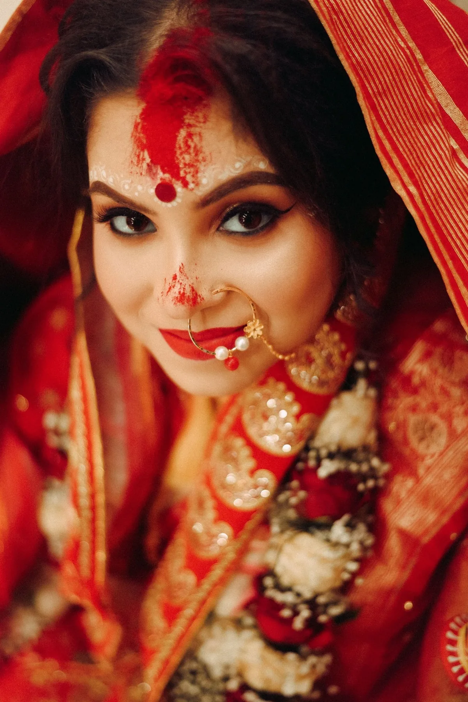

Getting ready
Allow time for details, portraits and the people beside you. Tell the team if both preparations happen in different places.
Your wedding, thoughtfully covered
Explore the photographs, understand your coverage and make room for the people and traditions you want to remember.

Start with what matters
A family ceremony at home and a celebration across several venues need different plans. Share your events, important people and preferred balance of candid moments, directed portraits and family groups.
Shape your coverage
These are planning areas to discuss. Your proposal confirms which events, hours and people are covered.
Allow time for details, portraits and the people beside you. Tell the team if both preparations happen in different places.
Share the ceremony sequence, important traditions and a short priority list of family groups.
Find a comfortable portrait window around the day’s rhythm, then agree the reception and evening coverage.
Start a group list, name a coordinator and prioritise the combinations that matter most.
Real celebrations in motion
Wedding film
Wedding teaser
Film titles identify the actual couples. Cover photographs are representative portfolio selections. A film or curated photo collection is different from a complete wedding gallery.
Ask for a complete gallery with similar lighting, event scale and rituals before booking.
A little clarity
Photographs give you individual moments to print, share and put in an album. Films add voices, movement and sound. Start with what you would actually like to revisit, then decide which events need each kind of coverage.
For your proposal: Confirm the photo-and-film combination and crew for each event.
Discuss this questionAsk to meet or speak with the lead people proposed for your celebration, and see work relevant to the events they will cover. The person answering an enquiry may not be the person assigned to every event.
For your proposal: Names, roles, crew per event and any substitution process need studio confirmation.
Discuss this questionMake a short prioritised group list and choose someone who knows the family to help gather people. Share important combinations and any timing constraints before the wedding. Our family-photo worksheet can help.
For your proposal: The plan improves coordination; it cannot guarantee every photograph regardless of timing or attendance.
Discuss this questionShare both locations and their schedules. Overlapping preparation and travel between venues affects how the crew should be arranged.
For your proposal: Confirm who covers each location and whether an additional photographer or filmmaker is needed.
Discuss this questionBuild some breathing room into the schedule and agree a family or planner contact for changes. Coverage hours and overtime should be clear before the event.
For your proposal: Ask when the coverage clock starts, when it ends and how extra hours are approved and charged.
Discuss this questionTreat the first preview, full edited gallery, teaser, main film and albums as separate milestones. Album production may also depend on your selection and approval.
For your proposal: The studio has not supplied confirmed delivery dates for this preview. Get each milestone and the update contact in your proposal.
Discuss this questionA plan that feels like you
Your plans can be detailed, undecided or somewhere in between. Share what matters and ask for a current written proposal.
Build your plan